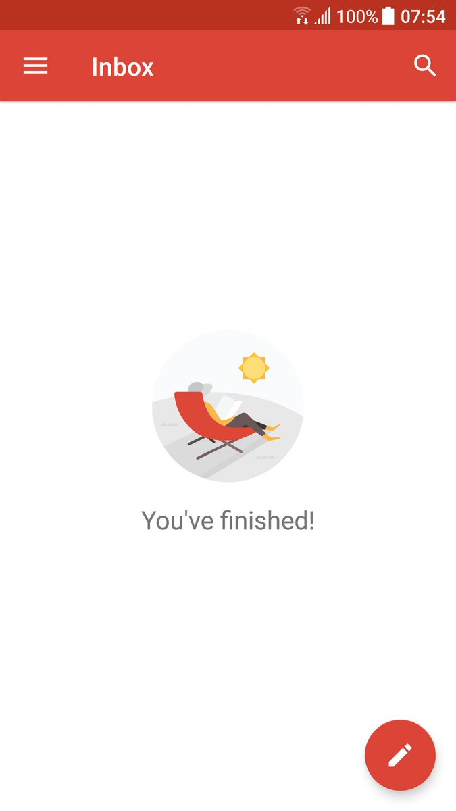

Everything you wanted to know about running a lab but were afraid to ask
OK, not quite “everything”
- Topics I will not discuss
- Getting a PI position
- Getting tenure
- Publishing
- Writing grants
- Data management
- Teaching
https://www.hhmi.org/science-education/programs/resources/making-right-moves

What’s not different:
- You are still you
- You will still need mentoring
- You constantly have to learn new things and adapt to changing realities

The hardest problems you will encounter in science are psycho/social, not technical
‘If you find yourself concentrating on the technology rather than the sociology, you’re like the vaudeville character who loses his keys on a dark street and looks for them on the adjacent street because, as he explains, “The light is better there.”’(DeMarco & Lister, Peopleware, 2nd ed.)

The “Goldilocks Zone” of anxiety

Arnsten, 2012
Risk management

Task management
- GTD (“Getting Things Done”)
- You need a trusted system to organize all of your tasks


Inbox Zero
- One of the worst things you can do is to use your inbox as a todo list
- You should aim for Inbox Zero

Inbox Zero
- Few things feel as satisfying as an empty inbox.

The messy desk syndrome

Keep your desk clean. Your psyche will thank you.
Motivational surfing

(Some) rules are made to be broken


Lab documentation : Outward-facing

Show the world who your lab is.
- Mission/values statements
- Mentorship style/philosophy
- SOPs
http://poldracklab.github.io
Annual climate survey


“Perhaps the greatest technological achievement in industrial and organizational (I–O) psychology over the past 100 years is the development of decision aids (e.g., paper-and-pencil tests, structured interviews, mechanical combination of predictors) that substantially reduce error in the prediction of employee performance. Arguably, the greatest failure of I–O psychology has been the inability to convince employers to use them.” (Highhouse, 2008)
Agile project management
- Reaction to traditional project management approaches (“waterfall” planning)

https://agilemanifesto.org/
Agile project management
- Reaction to traditional project management approaches (“waterfall” planning)
- Principles of agile management for a scientific lab (West, 2018)
- Individuals and interactions over processes and tools
- Seeking improvements over sustaining practices
- Collaboration over competition
- Responding to change over following a plan
https://agilemanifesto.org/
https://www.agilealliance.org/resources/experience-reports/reinventing-research-agile-in-the-academic-laboratory/
Poldracklab budget, 2022
- 3 research scientists
- 4 software engineers
- 5 postdocs
- 5 graduate students
- 2-3 research coordinators
- 2 part-time contractors